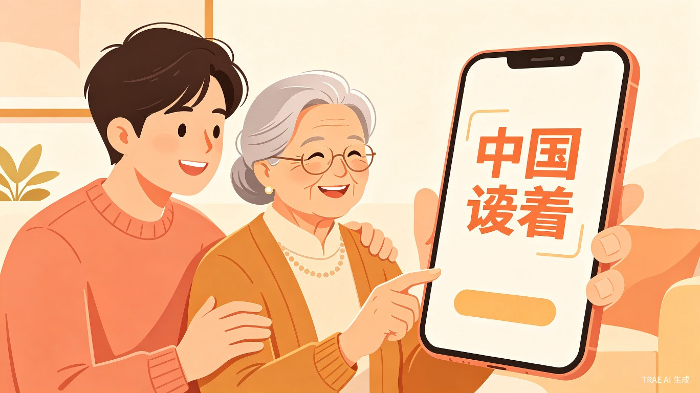
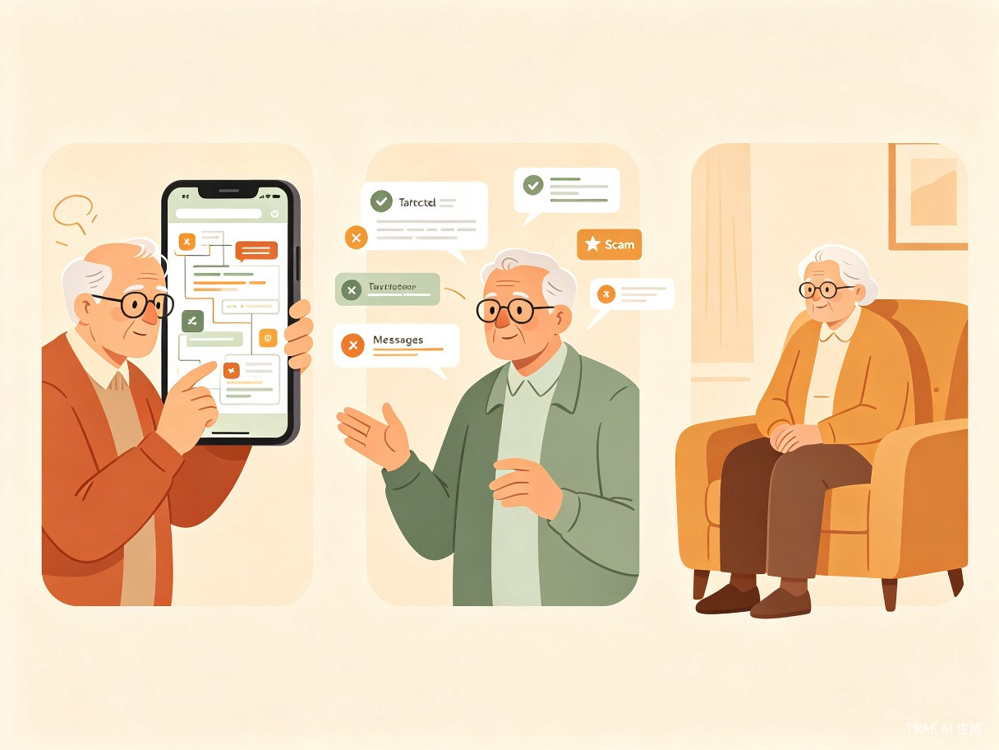
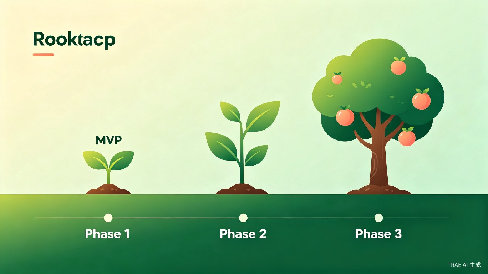

银发助手
中老年人生活互助平台 — 社会公益赛道创意方案

让每一位中老年人都能轻松解决生活难题，重新找回生活的掌控感和尊严
一、创意背景与痛点分析
中国已全面进入中度老龄化社会，3.23亿60岁以上人口正面临严峻的"数字鸿沟"挑战。
1.1 宏观背景
截至2025年末，我国60岁及以上人口已达3.23亿，占总人口22.86%，预计2026年将突破3.31亿[1]。银发经济规模已达9.4万亿元，预计2030年突破25万亿元[2]。与此同时，60岁以上网民AI使用率达53.7%，生成式AI用户已超3000万[3]。2025年国务院印发《关于深入实施"人工智能+"行动的意见》，明确要求推动"人工智能+"民生福祉[4]。
1.2 核心痛点
中老年群体在数字生活中面临三大核心困境：

不敢用
怕按错键、怕被骗、怕麻烦别人，产生畏难情绪。超六成银发用户仅会打电话和微信聊天等基础操作[5]。
不会用
智能产品操作逻辑更新快，学了又忘、反复询问。超三成使用过"长辈模式"但因操作复杂而放弃[6]。
用不好
超七成收到过保健品/养老理财定向推送广告，超四成遭遇扣款纠纷，成为网络诈骗重灾区[7]。
1.3 适老化改造现状不足
虽然工信部已推动3000余家网站和App完成适老化改造，但实际效果不尽人意——语音识别不准、操作流程复杂、广告营销干扰等问题依然突出[8]。老年人最迫切的改进需求为：字体更大/按钮更清晰（51.22%）、减少广告弹窗（50.47%）、更简洁的长辈模式（41.88%）[9]。
二、产品定位与目标用户
2.1 产品定义
核心定位
"银发助手" — 一个面向中老年群体的社区化知识分享与互助问答平台，以微信小程序为核心载体，语音优先交互，极简界面设计，帮助中老年人轻松解决日常生活难题。
2.2 目标用户画像
| 维度 | 核心用户（Primary） | 次要用户（Secondary） |
|---|---|---|
| 年龄 | 55-75岁 | 25-45岁（子女/志愿者） |
| 居住 | 城市社区、县城、乡镇 | 同上 |
| 数字能力 | 会微信基础功能，复杂操作困难 | 熟练使用智能手机 |
| 核心诉求 | 解决日常生活中的具体问题 | 帮助父母使用平台、回答问题 |
| 心理特征 | 渴望被尊重、害怕麻烦别人、希望保持学习能力 | 关心父母、愿意"数字反哺" |
2.3 差异化优势
| 优势点 | 说明 |
|---|---|
| AI即时解答 | 无需等待志愿者，24小时随时响应，语音输入零门槛 |
| 步骤化指导 | 分步骤+大图+语音播报，降低执行难度 |
| 轻资产模式 | 纯线上平台，不受地域限制，可快速扩张 |
| 内容驱动 | 技巧库可沉淀、可复用，边际成本低 |
| 代际互动 | 子女参与内容创作，形成"数字反哺"闭环 |
三、三大核心场景
场景一：智能手机使用
覆盖微信使用、手机设置、日常支付等高频需求。用户语音提问后，AI匹配预设知识库中的分步图文教程，每步配大图+文字+语音播报，用户看完一步点击"下一步"再操作。
MVP聚焦
第一阶段仅聚焦此场景，验证模式后再扩展至日常生活和防诈骗场景。
场景二：日常生活（衣食住行）
覆盖家电使用、线上办事、出行导航等需求。MVP阶段采用"图文步骤+语音播报"模式；V2.0阶段接入AI图像识别，用户拍照上传当前状态，AI判断操作是否正确。
场景三：防诈骗
设为独立一级入口，内容形式包括案例故事（图文）+ 识别技巧（视频）+ 一键举报功能。与公安机关、消协合作获取权威案例素材。
四、产品交互设计
4.1 首页设计
首页采用"主动发现+被动问答"双模式，解决中老年用户"不知道该问什么"的核心问题。
首页线框示意
您好！今天学一招
📱 微信视频通话怎么打？
3步学会 · 2万人已学
🔧 手机字体怎么调大？
2步搞定 · 1.5万人已学
4.2 AI解答流程
用户长按语音按钮说话 → 震动反馈 → 松手发送 → AI语音识别 → 意图匹配知识库 → 语音播报答案摘要 → 同时展示大字号文字+步骤图片。用户可逐步操作，遇到困难一键呼叫子女或志愿者。
flowchart LR
A[长按说话] --> B[语音识别ASR]
B --> C[AI意图匹配]
C --> D{知识库命中?}
D -- 是 --> E[返回步骤化教程]
D -- 否 --> F[大模型生成回答]
E --> G[语音播报+图文展示]
F --> G
G --> H{用户满意?}
H -- 是 --> I[收藏/完成]
H -- 否 --> J[呼叫子女/志愿者]
4.3 设计原则
- 语音优先：所有核心功能均可通过语音完成，零打字门槛
- 超大字体：全局字体≥20px，支持一键放大至28px
- 高对比度：文字与背景对比度≥4.5:1（WCAG AA标准）
- 极简操作：每个页面不超过3个主要操作按钮
- 零广告：全程无弹窗广告、无诱导点击
五、MVP功能清单
| 优先级 | 模块 | 功能点 | 用户价值 |
|---|---|---|---|
| P0 | 语音提问 | 长按说话→AI识别→匹配答案 | 核心功能，解决"不会打字"痛点 |
| P0 | AI智能解答 | 意图识别→知识库匹配→步骤化回答 | 即时解决常见问题 |
| P0 | 步骤化教程 | 大图+文字+语音播报，分步展示 | 老人跟着做，降低执行难度 |
| P0 | 大字体/高对比度 | 全局字体≥20px，支持一键放大 | 视力友好 |
| P1 | 人工求助 | 一键唤起微信视频（子女）/预约志愿者 | 复杂问题有人帮 |
| P1 | 技巧广场 | 分类浏览热门技巧（图文/视频） | 主动学习，内容沉淀 |
| P1 | 防骗专区 | 最新诈骗案例+识别技巧 | 安全守护 |
| P2 | 个人中心 | 收藏记录、使用历史、字体设置 | 个性化体验 |
| P2 | 内容反馈 | "有帮助/没帮助"按钮 | 数据闭环，优化推荐 |
5.1 MVP排期（6-8周）
| 阶段 | 周期 | 交付物 |
|---|---|---|
| 基础框架 | 第1-2周 | 小程序骨架、UI组件库、大字体主题 |
| 核心功能 | 第3-4周 | 语音输入、AI问答、步骤展示 |
| 内容填充 | 第5-6周 | 种子内容库（50条高频问题）、人工求助 |
| 测试优化 | 第7-8周 | 邀请10-20位老人内测、收集反馈、迭代 |
六、技术架构选型
6.1 整体架构
flowchart TB
subgraph 用户层
A[微信小程序
用户端]
B[管理后台
运营端]
C[内容审核后台
审核端]
end
subgraph 云服务层
D[微信云开发
云函数+数据库+存储]
E[腾讯云服务
ASR+TTS]
F[第三方AI服务
大模型API]
end
A --> D
B --> D
C --> D
D --> E
D --> F
6.2 技术栈选型
| 层级 | 技术选型 | 说明 |
|---|---|---|
| 前端 | 微信小程序原生框架 | 性能最优，无需跨平台 |
| 后端 | 微信云开发（Node.js云函数） | 免运维，自动扩缩容，首年免费额度 |
| 数据库 | 云开发JSON文档数据库 | 灵活存储，无需设计表结构 |
| 存储 | 云开发云存储（COS） | 图片/视频/音频文件存储 |
| 语音识别 | 腾讯云ASR | 中文识别准确，与微信生态兼容好 |
| 语音合成 | 腾讯云TTS | 支持多种音色，可调节语速 |
| 大模型 | DeepSeek V4-Flash | 性价比最高，中文能力强，国内合规 |
6.3 AI服务选型对比
6.4 MVP阶段月度成本估算
| 项目 | 用量估算（月活1000用户） | 月成本 |
|---|---|---|
| 云开发基础 | 免费额度内 | ¥0 |
| 语音识别（ASR） | 500分钟 | ¥3 |
| 语音合成（TTS） | 2000次 | ¥40 |
| 大模型API | 50万tokens | ¥1-2 |
| 云存储 | 5GB | ¥0（免费额度内） |
| 合计 | — | 约 ¥45/月 |
七、内容运营与创作者激励
7.1 内容获取策略
| 渠道 | 具体方式 | 预期效果 |
|---|---|---|
| 自营种子内容 | 团队动手制作前100条高频问题教程 | 质量可控，风格统一，成本可控 |
| 子女UGC | 鼓励子女分享教父母的过程 | 内容天然适老化，有情感传播力 |
| AI辅助生成 | 大模型生成教程初稿，人工审核 | 极低成本，快速覆盖长尾问题 |
| 机构合作 | 社区、老年大学、志愿者组织 | 获取权威、专业内容 |
| KOL合作 | 邀请中老年内容博主入驻（后期） | 快速获取优质内容 |
7.2 审核流程
flowchart LR
A[创作者投稿] --> B[AI初审
敏感词/图片合规]
B --> C{通过?}
C -- 是 --> D[人工复审
准确性/适老化]
C -- 否 --> E[退回修改]
D --> F{通过?}
F -- 是 --> G[发布上线]
F -- 否 --> E
7.3 创作者激励体系
| 层级 | 条件 | 权益 |
|---|---|---|
| 爱心分享者 | 发布3篇以上 | 专属徽章、积分奖励 |
| 银发达人 | 发布10篇以上，获赞100+ | 首页推荐、实物奖品 |
| 公益大使 | 发布30篇以上，影响力突出 | 线下活动邀请、荣誉证书 |
八、商业模式设计
公益属性优先，市场化运营为辅，探索可持续的"公益+商业"混合模式。
8.1 分阶段收入来源
| 阶段 | 收入来源 | 预估金额 | 说明 |
|---|---|---|---|
| 纯公益期 （0-12月） | 公益创投/创新大赛奖金 | ¥5-20万 | 社会公益赛道获奖奖金 |
| 政府购买服务/补贴 | ¥10-30万 | 民政部门、老龄委购买服务 | |
| 企业CSR赞助 | ¥5-10万 | 科技公司、银行等企业社会责任 | |
| 基金会资助 | ¥10-20万 | 老龄公益基金会、腾讯公益等 | |
| 轻商业化 （12-24月） | 政府/机构采购 | 占比40% | 向社区、街道输出平台服务 |
| B端企业服务 | 占比25% | 为银行、运营商提供中老年运营工具 | |
| 适老化产品推荐佣金 | 占比20% | 与适老化厂商合作，成交分成 | |
| 公益捐赠 | 占比15% | 个人/企业捐赠，透明化运营 |
8.2 成本结构
| 成本项 | MVP阶段 | 成长期 |
|---|---|---|
| 技术开发 | 1-2人（兼职） | 3-5人全职 |
| 云服务+AI API | ¥50-200/月 | ¥2000-5000/月 |
| 内容运营 | 志愿者+兼职 | 1-2人全职 |
| 市场推广 | 0（口碑+社区） | ¥5000-20000/月 |
| 月度总成本 | ¥500-2000 | ¥15000-40000 |
九、竞品对标分析
| 维度 | 腾讯"时光家园" | 字节"银杏家园" | 银发助手（本方案） |
|---|---|---|---|
| 定位 | 社区互助养老平台 | 乡村助老公益项目 | 中老年知识互助平台 |
| 形态 | 微信小程序 | 线下站点+线上 | 微信小程序 |
| 核心功能 | 需求发布→志愿者接单 | 助餐+防诈+数字教学 | AI语音问答+步骤化教程 |
| 覆盖 | 苏州500社区，3万+用户 | 全国13省51站点，66万+人次 | 规划中 |
| 优势 | 政府背书、社区嵌入深 | 线下体验好、标准化运营 | AI即时响应、语音优先 |
| 劣势 | 依赖线下志愿者，响应受限 | 重资产，扩张成本高 | 需验证用户留存 |
| 运营模式 | 积分制激励 | "公建民营"轻资产 | 内容驱动+AI赋能 |
十、落地可行性评估
10.1 多维度评分
10.2 核心风险与应对
| 风险 | 概率 | 影响 | 应对策略 |
|---|---|---|---|
| 内容冷启动失败 | 高 | 致命 | 团队自营100条种子内容，不做平台做产品 |
| 用户留存率低 | 高 | 严重 | 加入"每日一招"推送+学习激励体系 |
| 技术方案超预期 | 中 | 严重 | 严格MVP范围，砍掉摄像头/录屏功能 |
| 资金断裂 | 中 | 致命 | 控制月成本<2000元，优先申请公益基金 |
| 政策/合规风险 | 低 | 中 | 内容审核机制，避免医疗/金融建议 |
10.3 高难度功能的替代方案
| 原始设计 | 难度 | 替代方案 |
|---|---|---|
| 摄像头实时AR指导 | 极高 | 分步图文教程+拍照验证（V2.0） |
| 手机录屏+光标高亮 | 极高 | 预录制操作演示视频（带高亮标注） |
| 博主内容引入 | 高 | 团队自营+子女UGC+AI辅助生成 |
| 志愿者实时接单 | 高 | MVP仅保留"呼叫子女"功能 |
| 多场景覆盖 | 高 | MVP只做"智能手机使用"一个场景 |
十一、落地路线图

第一阶段：内容产品验证（0-3月）
不做平台，做"100个手机技巧"内容包。验证中老年用户是否愿意看、看得懂、学得会。注册小程序账号，开通云开发环境，制作50-100条种子内容。
第二阶段：小程序上线验证（3-6月）
将内容包装成小程序，加入语音问答和AI匹配。联系10-20位老人做可用性测试，收集真实反馈。引入社区/街道合作，获取第一批真实用户。
第三阶段：平台化扩展（6-12月）
开放创作者入驻，做平台。扩展至日常生活和防诈骗场景。引入志愿者接单系统。申请公益基金和政府补贴，探索商业模式。
关键成功指标
| 阶段 | 指标 | 目标值 |
|---|---|---|
| 0-3月 | 种子用户 | 100位老人完成首次使用 |
| 3-6月 | 周留存率 | ≥30% |
| 6-12月 | 月活用户 | ≥5000 |
| 12-24月 | 累计解答次数 | ≥10万次 |
| 24月+ | 盈亏平衡 | 收入覆盖运营成本 |
十二、产品价值总结
弥合数字鸿沟
降低中老年人使用数字产品的门槛，从"数字弃民"变为"数字居民"。
激活社区互助
构建"以老助老、代际互助"的社区生态，让子女的"数字反哺"有平台可依。
提升防骗能力
减少老年人因信息不对称造成的财产损失，守护"养老钱"。
增强社会参与感
让老年人从被动接受帮助，到主动分享经验，重获价值感和尊严。
核心价值主张
让每一位中老年人都能轻松解决生活难题，重新找回生活的掌控感和尊严。